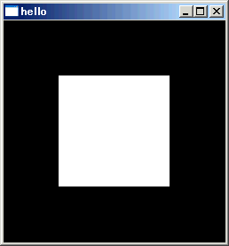
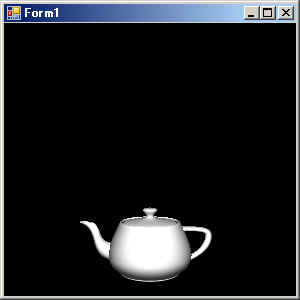

OpenGL関係(VB2005)
３．サンプルページ２（GLUT）
ここでもOpenGL用クラスライブラリを用いたサンプルプログラムを紹介します。
ただしサンプルページと異なりGLUTを使用しています。
よってGLUTをインストールする必要があります。
サンプルのソースはDLLのソース内にあります。
◎GLUTサンプル１（三角形描画その１）
ウィンドウ内に白い矩形を表示するサンプルです。
GLUTのサンプルの「hello.c」を移植したものと考えてください。

GLUTにはウィンドウを作成してくれる機能があり、コールバックを用いてイベントドリブンなプログラム構造を提供します。
考え方はVBに近いかもしれません。
glutDisplayFunc/glutKeyboardFunc等でコールバック関数を定義します。
glutDisplayFuncはPaintイベント、glutKeyboardFuncはKeyDownイベントと考えるとわかりやすいかもしれません。
なお具体的なウィンドウを作成する方法はスタートアップMain()内での初期化処理が参考になると思います。
GLUTではglutMainLoopを呼び出すことにより各種イベントを認識し
各コールバック関数を呼び出してくれますが、ここで一つ重大な注意があります。
glutMainLoopを呼び出してしまうと、二度と戻ってきません！
これは仕様です！
glutMainLoopを呼び出した時点で制御を完全にGLUTに任せることになります。
当然「終了処理等はどうするの？」という疑問があるかもしれませんが、
GLUTによれば
「プロセスを終了すればその辺はOSがやってくれるはず。
それをちゃんとやんないOSなんてしったこっちゃないね。」
というポリシーのようです・・・
そして通常GLUTを用いた場合ユーザ操作でウィンドウが閉じられればアプリは自動で終了しますが、VB2005からだと終了しません！
（私には原因がわかりません^^;。アンマネージコードの呼び出し関係でしょうか・・）
このためこのサンプルでは、アイドルイベント(何もすることがないときに呼び出されるコールバック)で
一秒おきにウィンドウが表示可能かどうかをしらべ、失敗した場合は終了するという手段をとっています。
また終了には「End」です。（これしかない・・・）
という訳で、ここでGLUTでのウィンドウ制御のやり方を紹介はしますがお勧めはしません。
まぁGLUTにはウィンドウ制御だけでなく、有名なティーポットを含む図形を描画したり便利な行列を作り出す機能等があるので
そちらについてはどんどん使ってかまわないと思います。
が、glutMainLoopだけは手を出さないことをお勧めします・・・
◎GLUTサンプル２（ティーポット描画）
ウィンドウ内に色々なティーポットを表示するサンプルです。
GLUTのサンプルの「teapots.c」を移植したものと考えてください。

このサンプルの構造はGLUTサンプル１とほとんどかわりません。
違いは射影変換行列やビューポートの設定と描画処理がティーポット用になっている所だけです。
見た目的に面白ので移植してみたってだけです(^^;
このサンプルコードと元のteapots.cと見比べて欲しいのですが、gl関係の部分についてはほとんど同じです。
実際このサンプルを作ったときは、
GLUTサンプル１から持ってきたコードにCソースの描画部分をコピーして貼り付け、行末の「;」を削除したぐらいで動作してしまいました。
OpenGL及びGLUTの移植性の高さには驚かされます。(まぁVB2005の構文がCの構文に近くなったってのも大きいでしょうが)
◎GLUTサンプル３（ティーポット描画その２）
ウィンドウ内に色々なティーポットを表示するサンプルです。
GLUTサンプル２と同様の動作／見た目ですが、ウィンドウ制御にGLUTを用いないでサンプルページ１と同様にWGLを使用しています。
つまりWGLとGLUTの混在です。
VB(VB2005)からGLUTを使う場合は、こういう使い方の方がいいと思います・・・
上に戻る